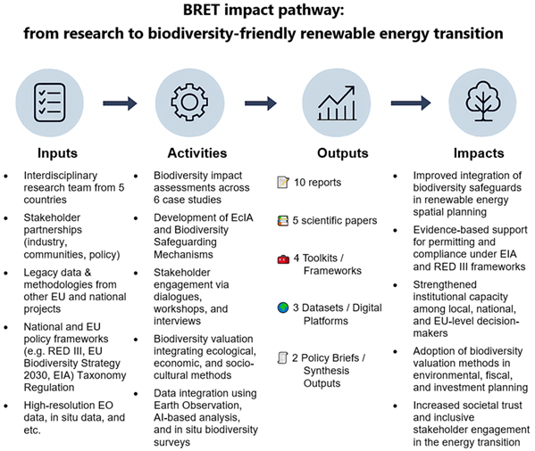

Evidence-Based Strategies for a Biodiversity-positive Renewable Energy Transition
BRET is a transnational research project (2026–2029) addressing how the rapid expansion of renewable energy can be aligned with biodiversity conservation. It develops evidence-based strategies and tools for biodiversity-positive renewable energy transition.
